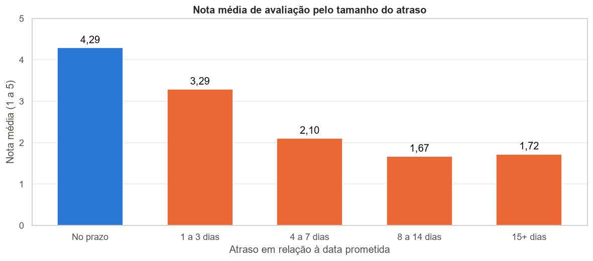

Destaque
E-commerce Olist: atraso na entrega × satisfação
- Pergunta
- O atraso na entrega derruba a satisfação do cliente? Onde vale a pena agir primeiro?
- O que eu fiz
- Análise exploratória em Python de cerca de 100 mil pedidos reais (Olist, 2016–2018), juntando 6 tabelas relacionais, com checagem de qualidade, engenharia de atributos (tempo de entrega, dias de atraso), estatística descritiva e correlação de Pearson. Dashboard em Power BI com modelo Star Schema, Power Query e medidas DAX.
- Resultado
- Pedidos atrasados recebem nota média 2,27, contra 4,29 dos entregues no prazo.
- São só 7% dos pedidos, mas geram 32% das avaliações negativas.
- O Nordeste concentra as maiores taxas de atraso (AL 21%); o RJ, 2º maior mercado, atrasa 12%, quase 3 vezes mais que SP e MG.
- Faturamento de jan–ago/2018 141% maior que no mesmo período de 2017, com pico na Black Friday.
PythonpandasSeabornPower BIDAXStar Schema
